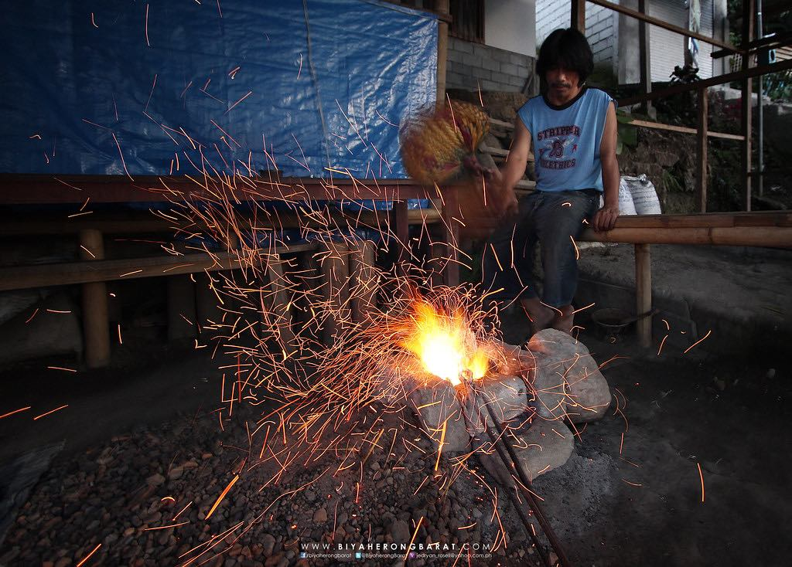

BRASSCASTER
Bells, gongs, ornaments, even kris swords, name it. Third generation brass caster Bundos Fara can turn scraps of metal into masterpieces using traditional techniques, a craftsmanship forged by generations of continuous practice and dedication. Most of his works are sold in several souvenir shops in town or you could visit his workshop.